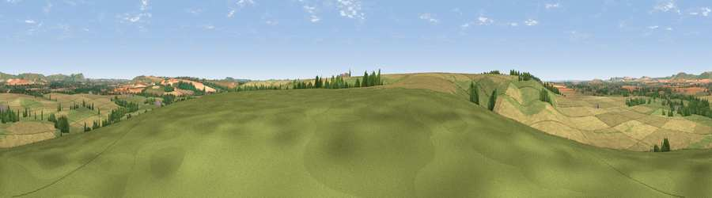

Viewpoint near Charlton St Peter
#22464 in England · top 39% of its area beats it · near Charlton St PeterThe view, rendered

A 360° render of this exact spot computed from the terrain model, tree cover and land cover — summer colours, afternoon light, calibrated against photographs of famous viewpoints. Real trees, hedges and buildings will differ in detail.
The panorama
Grey silhouette: terrain skyline in each direction (720 bearings, Earth curvature and refraction included). Dashed green: skyline with trees (+15 m) and buildings (+8 m) as obstacles. Blue strip: how far the ground is visible on each bearing.
Where the view opens
Wedge length = distance to the farthest visible ground on that bearing (vegetation-aware). Rings at 10, 25 and 50 km.
What fills the view
64% cropland · 31% grassland · 5% woodland
Angular shares of the visible panorama (visual magnitude), not map area. Landscape diversity 0.36 (0–1 Shannon).
Key numbers
More beautiful places nearby
The staircase of upgrades: each row has a higher view potential than everything closer. Driving times are estimates from straight-line distance, calibrated against real road routing — check an actual route before setting out.
| Place | Direction | Drive | Score |
|---|---|---|---|
| Viewpoint near Wedhampton | W · 5 km | ~11 min | 56.9 |
| Viewpoint near Urchfont | W · 7 km | ~14 min | 66.5 |
| Viewpoint near Alton Priors | N · 8 km | ~16 min | 72.5 |
| Viewpoint near Allington | NNW · 9 km | ~18 min | 75.6 |
| Martinsell viewpoint | NE · 11 km | ~21 min | 77.3 |
| Viewpoint near Berwick St John | SSW · 39 km | ~59 min | 78.2 |
| Viewpoint near Stinchcombe | NW · 56 km | ~78 min | 80.5 |
| Tennyson Down | SSE · 74 km | ~97 min | 83.2 |
51.30055, -1.84827 · source: screening · position refined by local search. Computed location — check access rights before visiting.